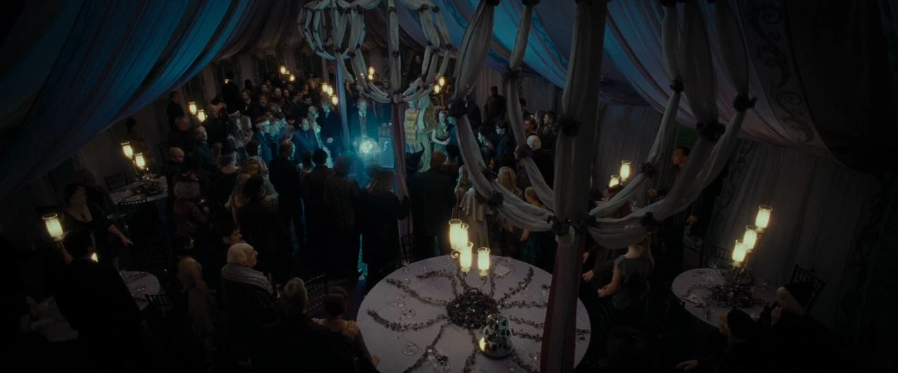

À Propos de Moi

Moi c'est Billal, j'ai 21 ans et je suis passionné par les technologies et l'innovation. Actuellement Ingénieur DevOps en alternance chez THALES, je me spécialise dans l'intégration et le déploiement continue. Depuis plusieurs années, je m'immerge dans la programmation et les outils qui permettent de créer des applications. Mon objectif est de devenir le plus polyvalent possible dans le domaine de l'informatique et de m'assurer constamment d'être à la pointe de l'innovation (et de la sécurité :) ).
En plus de mes compétences techniques, j'ai une passion pour l'univers d'Harry Potter. Chaque projet que je réalise est pour moi une occasion de faire un clin d'œil à cet univers magique. Que ce soit par des références subtiles ou par l'esthétique de mes créations, Harry Potter influence mon approche du DevOps.
Ce site est développé en PHP natif et utilise Tailwind CSS pour le design. Je suis fier de présenter ce portfolio comme un reflet de mes compétences et de ma personnalité.

De nouvelles fonctionnalités arrivent bientôt, restez connectés !